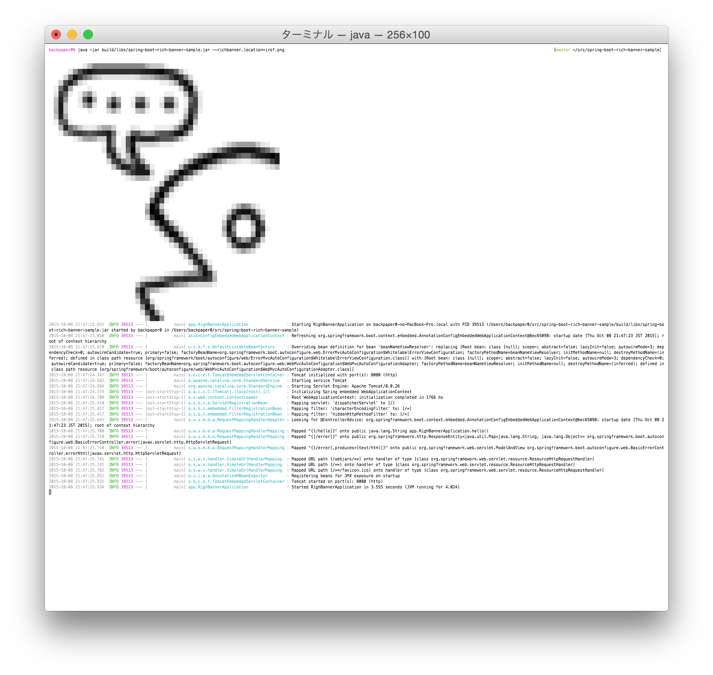
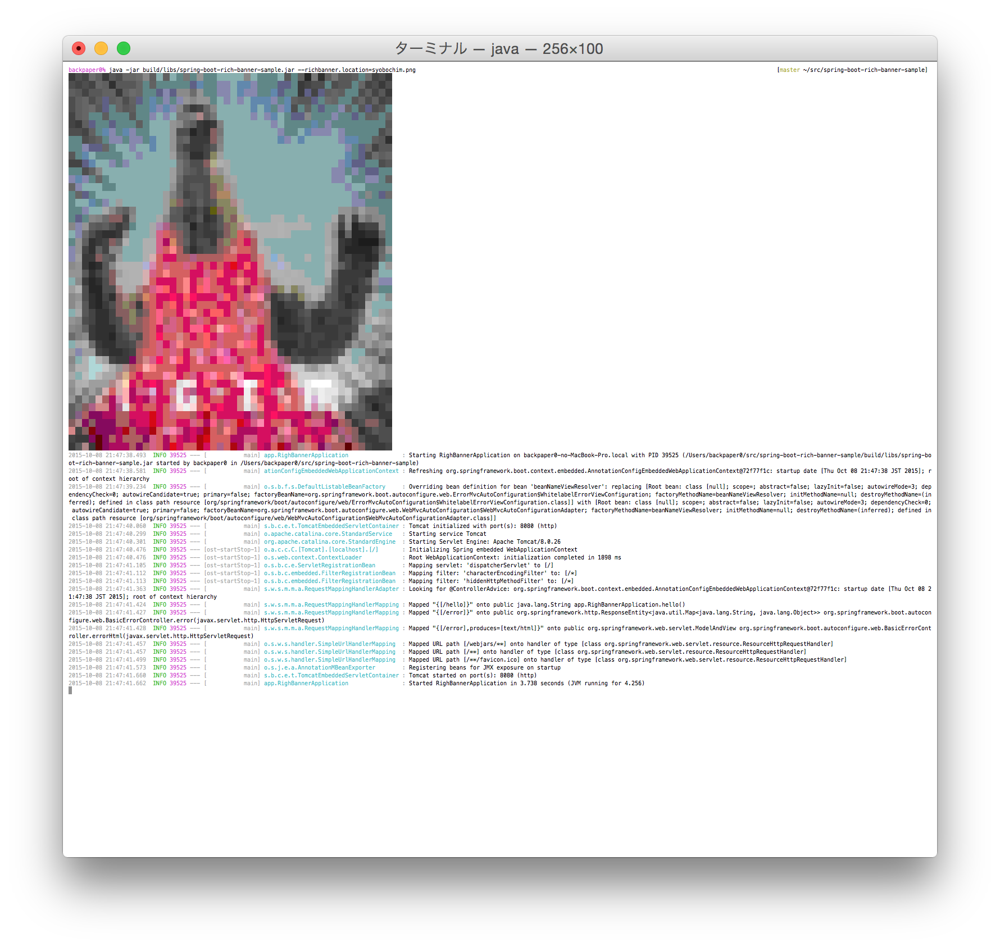
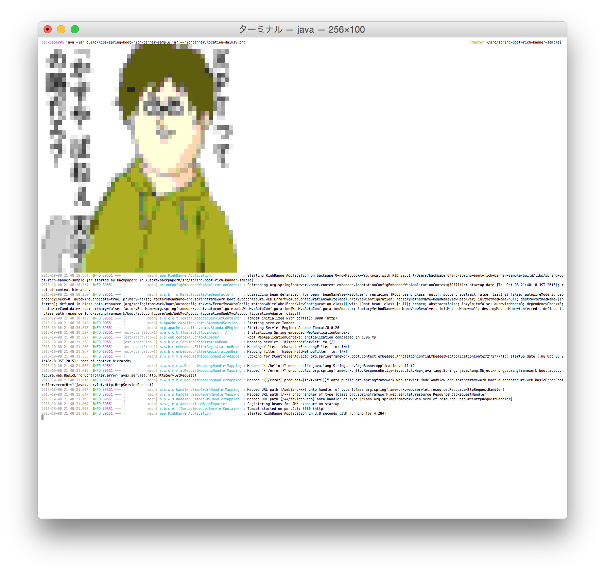

関西Java女子部主催「Javaでwebアプリケーション入門」をお手伝いしてきました #javajok
こんばんは！ Eclipseへのインポート手順を解説していた @backpaper0 です！
表題の通り、Javaのハンズオンイベントをお手伝いしてきました！
- http://javajok.connpass.com/event/22044/
- http://irof.hateblo.jp/entry/2015/11/16/235913 一緒にやった @irofさん のレポート
会場は楽天株式会社大阪支社のカフェテリアをお借り致しました。 @bufferingsさん 、休日なのにいつも笑顔でお付き合いくださりありがとうございます！
なお、会場提供くださった楽天株式会社大阪支社では11月21日(土)に Rakuten Technology Conference 2015 というイベントのサテライトが行われるそうです。
参加してみて私が得たもの
私は講師側として参加しましたが、分かりやすく教えることの難しさを学べました。
また、自分が初心者だった頃に何が分からなかったか、何を分かりたかったか、どうやって分かるようになったか、 などを見つめ直す良いきっかけとなりました。
運営にお誘いくださった @aa7thさん 、 今回のイベント開催のきっかけとなった @ar_keyakiさん 、 それから今回ご参加頂いた皆さん、本当にありがとうございました！
Eclipseへのインポートについて
さて、本日はプロジェクトをEclipseへインポートする箇所で不手際があり参加者の皆さんにはご迷惑をお掛けし、申し訳ありませんでした。
もしご自宅で復習をなさる場合は、改めて https://github.com/javajok/simpletter からZIPファイルをダウンロードし、 gradlew eclipse を行ってインポートしてみてください。
なお、ダウンロードされるファイルの名前は「simpletter-master.zip」です。
APIについて
ハンズオンで使用したAPIのソースコードは次のURLにあります。
こちらもsimpletterと同じく、ZIPファイルをダウンロード・解凍して gradlew eclipse を行うことでEclipseにインポートする形式にできます。
余力がある方・興味がある方は宜しければこのAPIのソースコードも読んで、 色々といじってみてください。
最後に
私は基本的には詰まった時などのサポートに徹していました。
サポートの際はなるべく分かりやすく言葉を選び、そして「こうすれば出来る」だけでなく「なぜそうなるのか」も説明するよう心がけていました。 ですので、もし私のサポートがみなさんの理解の助けになれたのであれば、すごく嬉しいです。
それから、もしまた別のイベントでお会いする事があれば気軽にお声がけください。 今日の事を思い出しながらJavaでWebについてお話しましょう！
それでは繰り返しになりますが、本日は本当にありがとうございました！ すごく楽しかったです！
Spring Bootでカラフルなバナーを表示してみた
gradle build
java -jar build/libs/spring-boot-rich-banner-sample.jar
ではじぶーと
https://t.co/Z0kQb1fUGR pic.twitter.com/8wWuHiJwM6
— うらがみ (@backpaper0) 2015, 10月 7というわけでカラフルなバナーを表示するBannerクラスを書いてみました。
どうやってんのか
ターミナルの背景色を変更してスペースを2つ出力、を繰り返して絵を描いています。 スペースを2つ出力することで正方形になって良い感じにドット絵っぽくなります。
背景色を変えるには
ESC + '[48;05;' + 色のインデックス + 'm'
で出来ます。
次のGroovyコマンドを試してみてください。
groovy -e "System.out.write(0x1b);println('[48;05;20mHello, World!')"
背景色を元に戻すには
ESC + '[0m'
です。
それから、元画像はターミナルで出力できる色だけで構成されているわけではないので、 元画像から1ピクセルずつ色を読み込んでターミナルで出力できる256色の中から近い色を探して出力しています。
2つの色がどの程度近いかはカラーコードを三次元の座標に見立てて2つの色間の距離を求めて一番近いものを選んでいます。
int r = ((rgb1 >> 16) & 0xff) - ((rgb2 >> 16) & 0xff);
int g = ((rgb1 >> 8) & 0xff) - ((rgb2 >> 8) & 0xff);
int b = (rgb1 & 0xff) - (rgb2 & 0xff);
return (int) Math.sqrt(r * r + g * g + b * b);
概ねこんな感じです。
いろいろブート
うらがみブート。

いろふブート。
ちむブートﾍﾟﾛﾍﾟﾛ（＾ω＾）
こざブート✌️( ・ㅂ・)و🍺

ブートくしーさん。
やんくブート:q!